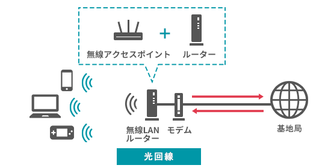

|
テレワーク不可能
これじゃ仕事できないよ…
悩み１ ビデオ通話がすぐに止まる
新型コロナウイルス感染拡大防止策で、仕事もテレワークに変わった。これで安心して仕事ができると思っていたが、ビデオ通話は頻繁に止まりし、
資料のダウンロードも遅い。どうやら家のインターネットは遅いらしい…。
悩み２ ネットのせいで仕事の効率が落ちる
自宅のネットの遅さのせいで、仕事の評価まで悪くなったらたまらない。
どうにか快適にテレワークできる環境を整えたい…。
そのお悩み、解決できます！
モバイルルーターは電波を利用するので安定しない
光回線は固定回線なので安定する

解決方法 安定して使える光回線を利用する
円滑なコミュニケーションが大事な仕事に、ネットワークの遅延は許されません。
通信速度が遅いインターネットサービスを利用していると、ビデオ通話が落ちたり、
ファイルの送受信に時間がかかったりと、仕事とは直接関係ないストレスが増える一方です。
インターネット専用の光回線を利用することで、高速の安定した通信を利用できます。 もう、インターネット回線が原因で「仕事ができない」なんて、思われる心配はありません。 |
|